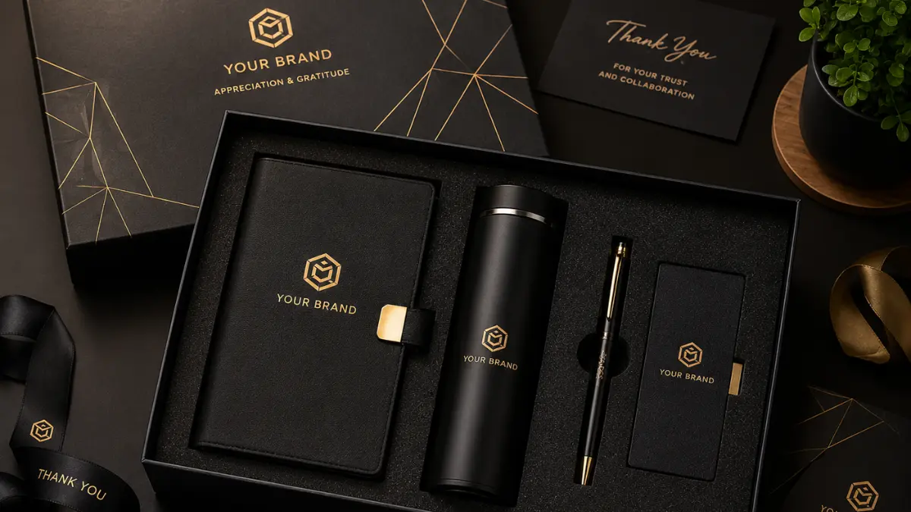

Gift Set Souvenir Kantor Premium Berisi Notebook, Vacuum Tumbler, dan Pen Metal
 Hawa Nadira (haw)
31 Juli 2026
4 Menit Baca
Hawa Nadira (haw)
31 Juli 2026
4 Menit Baca

Gift set souvenir kantor premium yang berisi notebook, vacuum tumbler, dan pen metal merupakan kombinasi favorit karena mencakup kebutuhan menulis, minum, dan aksesori kerja sehari-hari dalam satu paket elegan. Kombinasi ini cocok untuk hadiah klien, karyawan baru, maupun acara korporat besar. Material dan finishing setiap item sebaiknya senada agar kesan set terlihat menyatu.
Gift set souvenir kantor premium yang berisi notebook, vacuum tumbler, dan pen metal merupakan kombinasi favorit karena mencakup kebutuhan menulis, minum, dan aksesori kerja sehari-hari dalam satu paket elegan. Kombinasi notebook, tumbler, dan pen mencakup tiga kebutuhan dasar profesional sehari-hari. Gift set ini cocok untuk hadiah klien, karyawan baru, maupun acara korporat besar. Material dan finishing setiap item sebaiknya senada agar kesan set terlihat menyatu. Kemasan box eksklusif menjadi nilai tambah penting dalam gift set premium. Personalisasi logo dapat diterapkan di seluruh item untuk memperkuat identitas brand.
Apa Saja Komponen dalam Gift Set Souvenir Kantor Premium?
Komponen utama gift set ini biasanya terdiri dari notebook bersampul kulit atau kulit sintetis, tumbler vacuum stainless, dan pen metal dengan mekanisme putar atau klik.
Notebook dalam gift set premium umumnya menggunakan kertas berkualitas dengan jumlah halaman yang cukup untuk pemakaian jangka menengah, lengkap dengan elastic band dan slot kartu di bagian dalam sampul.
Tumbler vacuum dipilih karena kemampuannya menjaga suhu minuman panas maupun dingin, sehingga tetap fungsional digunakan di lingkungan kerja maupun perjalanan dinas. Sementara itu, pen metal menjadi pelengkap yang memberi kesan detail dan kerapian pada keseluruhan set.

Beberapa gift set premium juga menambahkan aksesori tambahan seperti tempat kartu nama atau pouch kecil. Namun kombinasi tiga item utama tersebut tetap menjadi format paling umum karena dianggap sudah mewakili kebutuhan dasar kerja profesional.
Mengapa Kombinasi Notebook, Tumbler, dan Pen Menjadi Favorit?
Kombinasi ini populer karena setiap item memiliki fungsi berbeda namun saling melengkapi dalam aktivitas kerja harian, sehingga penerima cenderung menggunakannya secara rutin.
Notebook digunakan untuk mencatat, tumbler untuk kebutuhan minum sehari-hari, dan pen sebagai alat tulis pendamping notebook. Karena ketiganya dipakai dalam konteks yang sama, yaitu aktivitas kerja, penerima gift set lebih mungkin membawa dan menggunakan seluruh item secara bersamaan, misalnya saat rapat atau bekerja di luar kantor.
Penggunaan yang konsisten ini secara tidak langsung memperpanjang durasi eksposur logo perusahaan, karena satu momen penggunaan bisa menampilkan lebih dari satu produk branding sekaligus.
Bagaimana Menyesuaikan Gift Set dengan Kebutuhan Acara?
Penyesuaian gift set dilakukan dengan mempertimbangkan skala acara, target penerima, dan anggaran yang tersedia agar kualitas tetap terjaga tanpa membebani biaya.
Untuk Acara Internal
Untuk acara internal seperti apresiasi karyawan, perusahaan dapat memilih varian gift set dengan material standar namun tetap rapi, sedangkan untuk hadiah klien VIP, disarankan menggunakan material kulit asli dan kemasan yang lebih eksklusif.
Jumlah Pemesanan
Jumlah pemesanan dalam skala besar biasanya memengaruhi opsi kustomisasi yang tersedia, sehingga perencanaan sejak awal akan membantu proses produksi berjalan lebih efisien.
Konsistensi Brand
Selain itu, penting untuk menyesuaikan warna dan desain set dengan identitas visual perusahaan, agar gift set terlihat sebagai satu kesatuan branding yang konsisten, bukan sekadar kumpulan barang terpisah.
Butuh Gift Set Souvenir Premium untuk Perusahaan Anda?
Konsultasikan kebutuhan gift set souvenir kantor premium Anda dengan tim kami untuk mendapatkan rekomendasi produk dan solusi terbaik.
Konsultasi SekarangKesimpulan
Gift set souvenir kantor premium berisi notebook, vacuum tumbler, dan pen metal menawarkan kombinasi fungsional yang mendukung aktivitas kerja sekaligus memperkuat citra profesional perusahaan. Pemilihan material yang konsisten, kemasan yang rapi, dan penyesuaian dengan kebutuhan acara akan menentukan keberhasilan gift set ini sebagai media branding jangka panjang.
FAQ Seputar Gift Set Souvenir Kantor Premium